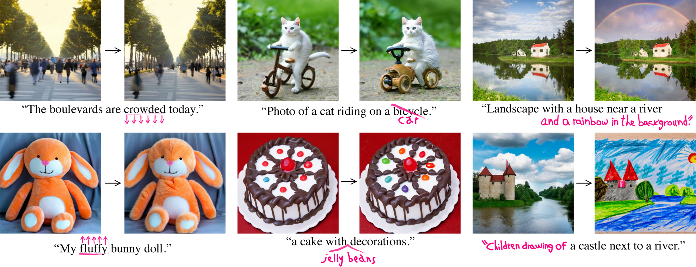

Prompt-to-Prompt Image Editing with Cross-Attention Control

Recent large-scale text-driven synthesis diffusion models have attracted much attention thanks to their remarkable capabilities of generating highly diverse images that follow given text prompts. Therefore, it is only natural to build upon these synthesis models to provide text-driven image editing capabilities. However, Editing is challenging for these generative models, since an innate property of an editing technique is to preserve some content from the original image, while in the text-based models, even a small modification of the text prompt often leads to a completely different outcome. State-of-the-art methods mitigate this by requiring the users to provide a spatial mask to localize the edit, hence, ignoring the original structure and content within the masked region. In this paper, we pursue an intuitive prompt-to-prompt editing framework, where the edits are controlled by text only. We analyze a text-conditioned model in depth and observe that the cross-attention layers are the key to controlling the relation between the spatial layout of the image to each word in the prompt. With this observation, we propose to control the attention maps of the edited image by injecting the attention maps of the original image along the diffusion process. Our approach enables us to monitor the synthesis process by editing the textual prompt only, paving the way to a myriad of caption-based editing applications such as localized editing by replacing a word, global editing by adding a specification, and even controlling the extent to which a word is reflected in the image. We present our results over diverse images and prompts with different text-to-image models, demonstrating high-quality synthesis and fidelity to the edited prompts.< /p>
Our method takes as input a few images (typically 3-5 images suffice, based on our experiments) of a subject (e.g., a specific dog) and the corresponding class name (e.g. "dog"), and returns a fine-tuned/"personalized'' text-to-image model that encodes a unique identifier that refers to the subject. Then, at inference, we can implant the unique identifier in different sentences to synthesize the subjects in difference contexts.

Given ~3-5 images of a subject we fine tune a text-to-image diffusion in two steps: (a) fine tuning the low-resolution text-to-image model with the input images paired with a text prompt containing a unique identifier and the name of the class the subject belongs to (e.g., "A photo of a [T] dog”), in parallel, we apply a class-specific prior preservation loss, which leverages the semantic prior that the model has on the class and encourages it to generate diverse instances belong to the subject's class by injecting the class name in the text prompt (e.g., "A photo of a dog”). (b) fine-tuning the super resolution components with pairs of low-resolution and high-resolution images taken from our input images set, which enables us to maintain high-fidelity to small details of the subject.

Results for re-contextualization of a bag and vase subject instances. By finetuning a model using our method we are able to generate different images of the a subject instance in different environments, with high preservation of subject details and realistic interaction between the scene and the subject. We display the conditioning prompts below each image.

By adding a style description to the prompt while injecting the source attention maps, we can create various images in the new desired styles that preserve the structure of the original image.
@article{hertz2022prompt,
title={Prompt-to-prompt image editing with cross attention control},
author={Hertz, Amir and Mokady, Ron and Tenenbaum, Jay and Aberman, Kfir and Pritch, Yael and Cohen-Or, Daniel},
booktitle={arXiv preprint arXiv:2208.01626},
year={2022}
}
Acknowledgements: We thank Noa Glaser, Adi Zicher, Yaron Brodsky and Shlomi Fruchter for their valuable inputs that helped improve this work, and to Mohammad Norouzi, Chitwan Saharia and William Chan for providing us with their support and the pretrained models of Imagen. Website template is borrowed from DreamBooth.